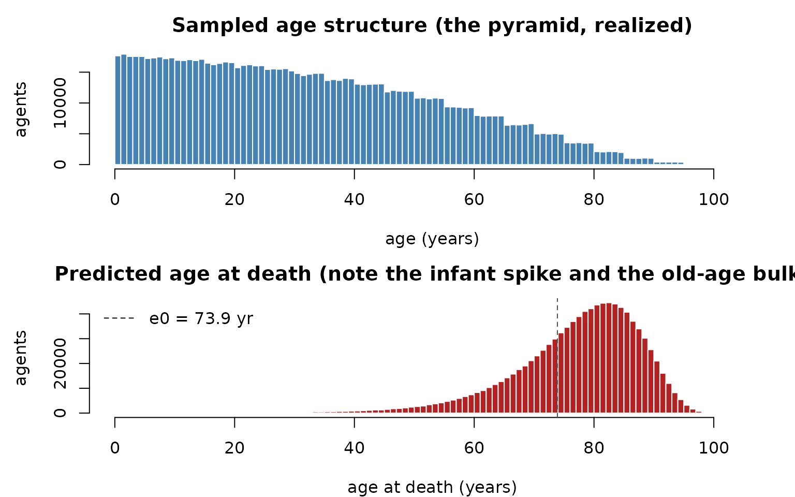

Realistic populations: age pyramids and dates of death
Source:vignettes/articles/demographics.Rmd
demographics.RmdCompanion to
examples/aged_population.R.
Why bother with demographics?
Many questions need agents that aren’t interchangeable: an
SIA that targets under-fives, age-dependent severity, vital dynamics
where newborns enter susceptible and the old die. That requires two
ingredients at initialization — a realistic age
structure, and a date of death for every agent
(so natural mortality can simply retire agents when their clock
arrives). razer provides both, ported from laser.core. No
disease here; this is the population-building step that the
vital-dynamics and measles models build on.
Ages from a population pyramid (the alias method)
A population pyramid is the count of people in each age band
(often by sex). To sample a million agents’ ages in proportion to it,
razer builds an AliasedDistribution —
Walker’s alias method, which draws from an arbitrary discrete
distribution in O(1) per sample after an O(k) setup,
far faster than a cumulative-sum search.
sample_pyramid_ages() wraps it: pick a band in proportion
to its population, then a uniform day within that band’s year range,
returning ages in days.
pyramid <- load_pyramid_csv(file.path("..", "..", "examples", "data", "pyramid_example.csv")) # "Age,M,F" bands
n_agents <- 1000000L
ages_days <- sample_pyramid_ages(pyramid, n_agents)
ages_years <- ages_days / 365
cat(sprintf("%s agents; ages %.1f–%.1f yr (mean %.1f)\n",
format(n_agents, big.mark = ","), min(ages_years), max(ages_years), mean(ages_years)))## 1,000,000 agents; ages 0.0–101.0 yr (mean 32.8)A date of death (Kaplan–Meier, conditioned on current age)
We want each agent’s age at death. razer’s
KaplanMeierEstimator takes a life table —
cumulative deaths by year for a synthetic cohort — and
samples an age at death for each agent conditioned on the age it
is alive at now, so the draw is never in the past (the essence
of Kaplan–Meier conditional survival). Here we synthesize a life table
from a Gompertz–Makeham per-year mortality hazard
— a small baseline, an exponential rise with age, and an elevated infant
rate — by running a cohort through it.
n_years <- 106L; age <- 0:(n_years - 1L)
q <- pmin(0.0004 + 1e-5 * exp(0.115 * age), 1); q[1] <- 0.02 # hazard; q[1] = infant mortality
deaths <- numeric(n_years); alive <- 1e5
for (a in seq_len(n_years)) { # run a cohort through the hazard
d <- if (a == n_years) alive else round(alive * q[a]) # force the last year to clear
deaths[a] <- d; alive <- alive - d
}
km <- kaplan_meier_estimator(cumsum(deaths)) # non-decreasing cumulative deaths
death_age_days <- km$predict_age_at_death(ages_days, -1L) # -1L: use the table's last year
death_age_years <- death_age_days / 365
stopifnot(all(death_age_days >= ages_days)) # nobody dies in the past
e0 <- mean(km$predict_age_at_death(integer(1e5L), -1L)) / 365 # life expectancy at birth
cat(sprintf("predicted age at death: mean %.1f yr; implied e0 = %.1f yr; mean remaining life %.1f yr\n",
mean(death_age_years), e0, mean(death_age_years - ages_years)))## predicted age at death: mean 77.0 yr; implied e0 = 73.9 yr; mean remaining life 44.2 yr
par(mfrow = c(2, 1), mar = c(4, 4.5, 2.5, 1)); br <- seq(0, n_years, 1)
hist(ages_years, breaks = br, col = "steelblue", border = "white",
xlab = "age (years)", ylab = "agents", main = "Sampled age structure (the pyramid, realized)")
hist(death_age_years, breaks = br, col = "firebrick", border = "white",
xlab = "age at death (years)", ylab = "agents",
main = "Predicted age at death (note the infant spike and the old-age bulk)")
abline(v = e0, lty = 2, col = "grey30"); legend("topleft", sprintf("e0 = %.1f yr", e0), lty = 2, bty = "n")
How this feeds a model
Store the results as per-agent Columns and the rest of razer can use them:
-
dob(date of birth) = −age in days, ani32Column (negative = born before ). -
dod(date of death) = an absolute tick, au32Column; themortality()kernel retires an agent whendod <= tick. Thebirths()kernel draws a freshdodfor each newborn from the samekm. - Age-based targeting:
bincount_where(nodeid, n_nodes, dob, "gt", tick - 5*365, count)counts (or, with_wt, weights) the under-fives per node for a campaign or a report.
dob <- allocate_scalar("i32", n_agents); dob$set(-ages_days)## NULL
dod <- allocate_scalar("u32", n_agents); dod$set(as.integer(death_age_days))## NULL
cat(sprintf("under-5s at t=0: %s of %s agents\n",
format(sum(dob$values() > -5L * 365L), big.mark = ","), format(n_agents, big.mark = ",")))## under-5s at t=0: 88,226 of 1,000,000 agentsCustomize and extend
-
Real pyramids / life tables. Replace
pyramid_example.csvwith a UN/national pyramid, and buildkmfrom a published abridged life table (cumulative deaths by age) instead of the synthetic Gompertz hazard. -
Use it in a model. Pass these
dob/dodColumns into arun_model()initcallback and run thebirths/mortalitykernels instep_exit— seeexamples/engwal_measles.Rand the vital-dynamics notebook. -
Sizing the array. A growing population needs
head-room:
calc_capacity()bounds the cumulative births,calc_capacity_cdr()the peak-living size for asquash()-reclaimed run (see the long-runs notebook).